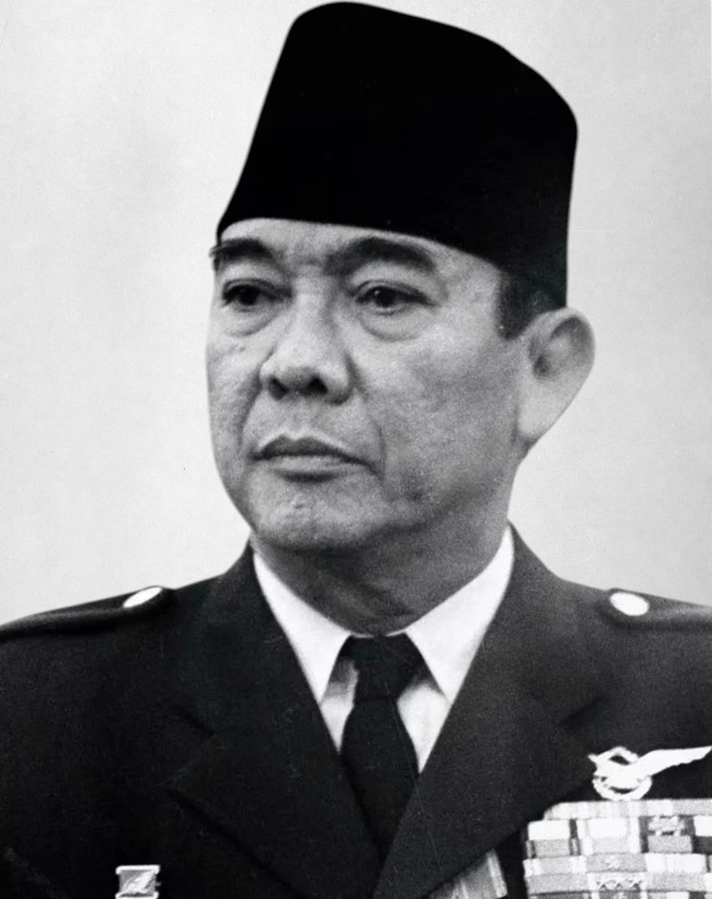
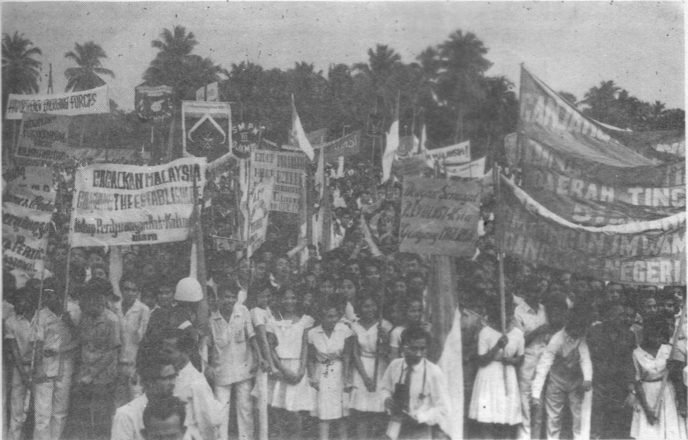
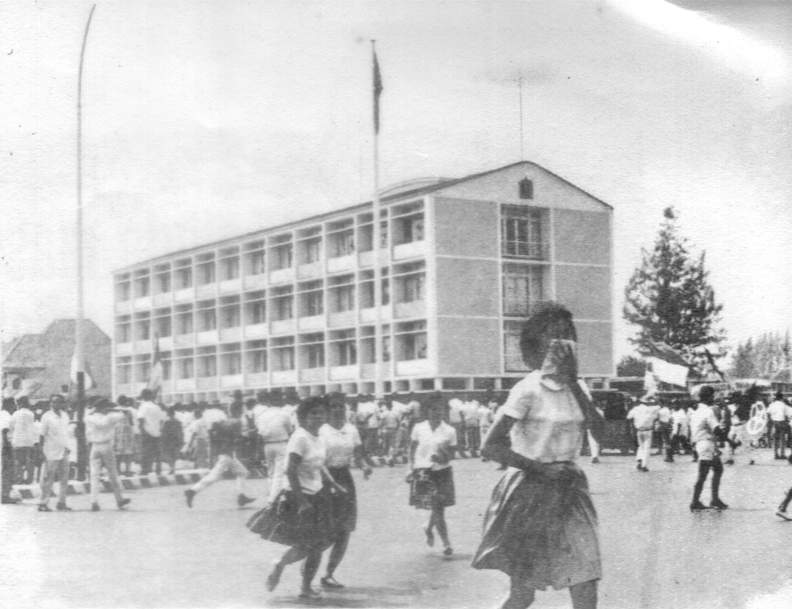
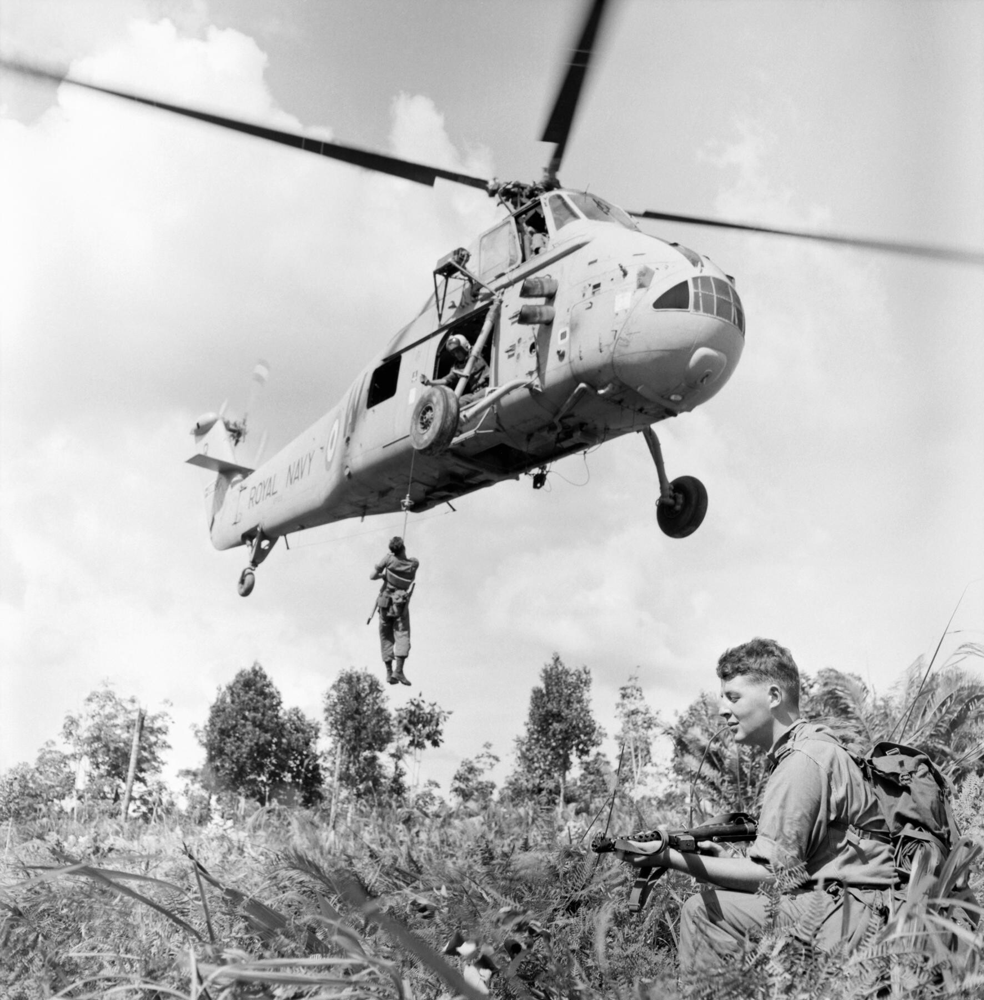
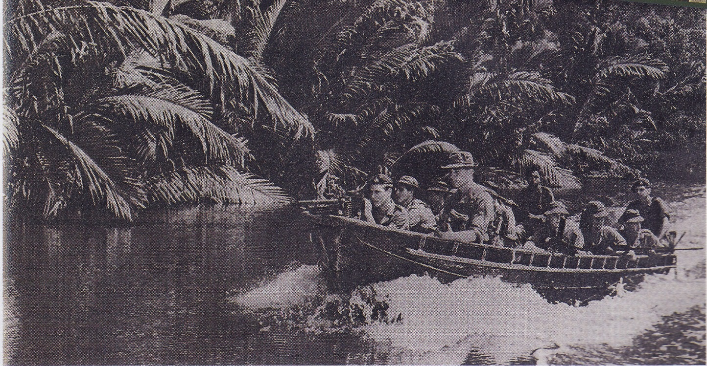

Pada 16 September 1963, Federasi Malaysia diproklamasikan — gabungan Malaya, Singapura, Sabah, dan Sarawak. Indonesia menolak mengakuinya. Presiden Soekarno menilai federasi itu proyek neo-kolonialisme Inggris, "negara boneka" yang akan menjadi pangkalan militer Inggris di Asia Tenggara. Retorikanya menggelegar: "Ganyang Malaysia!" Tiga setengah tahun kemudian, pada 11 Agustus 1966, Indonesia dan Malaysia menandatangani perjanjian damai. Perang yang tidak pernah diumumkan itu berakhir — bukan di medan tempur, melainkan di meja perundingan.

Gagasan "Malaysia" dan Penolakan Indonesia
Semua bermula 27 Mei 1961, ketika Perdana Menteri Malaya Tunku Abdul Rahman mengumumkan gagasan "Malaysia" di Singapura: penggabungan Semenanjung Tanah Melayu dengan Sabah, Sarawak, dan Brunei. Inggris — yang sedang mengatur penarikan diri dari koloninya — mendukung penuh rencana itu, dan mengusulkan federasi yang lebih besar dengan memasukkan Singapura.
Awalnya Indonesia tidak keberatan. Tetapi Soekarno kemudian berbalik: federasi baru itu, dalam pandangannya, akan melanggengkan pengaruh ekonomi, politik, dan militer Inggris di kawasan — ancaman langsung bagi kedaulatan dan revolusi Indonesia. Konteksnya penting: Indonesia baru saja memenangi Irian Barat (1962) lewat kampanye infiltrasi dan tekanan diplomatik, sehingga Soekarno merasa Indonesia adalah kekuatan regional yang patut diperhitungkan.
8 Desember 1962, pemberontakan meletus di Brunei — dilancarkan TNKU (Tentara Nasional Kalimantan Utara) yang dilatih di Kalimantan atas dorongan tokoh Brunei A.M. Azahari. Pemberontakan itu gagal total dalam ±30 jam setelah pasukan Gurkha diterbangkan dari Singapura. Derajat keterlibatan langsung Indonesia masih diperdebatkan sejarawan hingga hari ini.
20 Januari 1963, Menteri Luar Negeri Soebandrio mengumumkan kebijakan Konfrontasi terhadap rencana pembentukan Malaysia. Tiga bulan kemudian, 12 April 1963, infiltrasi pertama tercatat: penyerangan kantor polisi di Tebedu, Sarawak.

"Ganyang Malaysia!" — Akhir September 1963
Setelah Malaysia diproklamasikan 16 September 1963, reaksi beruntun tak terhindarkan: Indonesia menolak temuan misi PBB soal pendapat rakyat Borneo Utara (15 September), Malaysia memutus hubungan diplomatik (17 September), dan empat hari kemudian Indonesia membalas memutus hubungan diplomatik dan dagang dengan Malaysia dan Singapura.
Di Jakarta, gelombang demonstrasi anti-Malaysia dan anti-Inggris meledak. Kedutaan Besar Inggris dibakar (18 September 1963); pekerja serikat buruh merebut perkebunan dan perusahaan milik Inggris yang lalu diserahkan kepada pemerintah.

Di tengah situasi itulah Soekarno melontarkan pernyataan yang menjadi legenda: Indonesia harus "gobble Malaysia raw" — "Ganyang Malaysia". Sumber-sumber menempatkan pernyataan ini pada 23–25 September 1963.
Catatan redaksi: "Ganyang Malaysia" umumnya diterjemahkan "Crush Malaysia" (Hancurkan Malaysia). Namun menurut kajian yang diterbitkan di jurnal Bijdragen (2014), kata "ganyang" juga bisa berarti "chew up"/"devour raw" — mengunyah atau melumat mentah-mentah. Itulah yang menjelaskan varian terjemahan "gobble Malaysia raw" dalam laporan berbahasa Inggris. Penanggalan persis pernyataan Soekarno bervariasi antar-sumber (sebagian menyebut 27 Juli 1963 sebagai awal kampanye "ganyang"); kami memakai akhir September 1963 mengikuti mayoritas sumber.
Dwikora dan Perang yang Tidak Diumumkan
3 Mei 1964, Soekarno menyerukan Dwikora (Dwi Komando Rakyat) dalam apel besar di Jakarta. Dua komandonya: (1) perhebat ketahanan revolusi Indonesia; (2) bantu perjuangan revolusioner rakyat Malaya, Singapura, Sabah, Sarawak, dan Brunei untuk membubarkan negara boneka Malaysia.
Konfrontasi adalah perang yang tidak pernah diumumkan (undeclared war): pertempuran darat yang terkendali dan terisolasi, dalam taktik brinkmanship tingkat rendah. Operasi biasanya hanya seukuran kompi atau peleton di kedua sisi perbatasan Kalimantan–Malaysia Timur. Kampanye infiltrasi Indonesia bertujuan mengeksploitasi keragaman etnis dan agama Sabah–Sarawak untuk "mengurai" negara Malaysia yang baru diusulkan.
Eskalasi terbesar terjadi di Semenanjung Malaya pada 1964:
17 Agustus 1964 — ±100 orang (penerjun PGT Angkatan Udara, KKO Angkatan Laut, dan belasan komunis Malaysia) menyeberangi Selat Malaka dengan perahu dan mendarat di Pontian, Johor, dalam tiga rombongan. Bukannya disambut sebagai "pembebas", mereka ditahan pasukan Persemakmuran — semua kecuali empat orang tertangkap dalam hitungan hari.
2 September 1964 — tiga pesawat C-130 Hercules terbang rendah dari Jakarta menghindari radar menuju Semenanjung. Hanya dua yang mencapai zona terjun; yang ketiga jatuh di Selat Malaka saat menghindari intersepsi jet tempur Inggris. ±96–98 penerjun payung mendarat terpencar akibat badai tropis di sekitar Labis, Johor — sialnya, tepat di sebelah kemah pasukan Gurkha. Operasi penyisiran memakan waktu ±1 bulan; puluhan penerjun tewas dan mayoritas ditangkap. Sehari kemudian, 3 September 1964, Malaysia menyatakan keadaan darurat nasional.
29 Oktober 1964 — pendaratan di Sungai Kesang (perbatasan Melaka–Johor) oleh ±52 orang; hampir semua ditangkap setelah warga setempat melapor ke polisi.

Inggris merespons pada 1964 dengan Operasi Claret — operasi rahasia lintas batas ke Kalimantan Indonesia untuk mengganggu kampanye infiltrasi. Konflik ini pun menjadi episode Perang Dingin di Asia: Malaysia didukung militer langsung oleh Inggris, Australia, dan Selandia Baru; Indonesia didukung tidak langsung oleh Uni Soviet dan China. Menurut catatan National Library Board Singapura, Konfrontasi melibatkan 54.000 pasukan Inggris & Persemakmuran beserta polisi dan sukarelawan.

Soal korban, angka pastinya tidak ada — sajikan sebagai estimasi antar-sumber: sejarawan J.A.C. Mackie (Konfrontasi, 1974) mencatat lebih dari seratus tewas di pihak Malaysia dan lebih dari 500 orang Indonesia tewas, dengan lebih banyak lagi yang ditangkap. Dibanding konflik internasional lain pada eranya, korban Konfrontasi relatif kecil — namun setiap nyawa yang hilang tetaplah korban.
Catatan redaksi: artikel ini menyajikan operasi-operasi militer secara faktual sebagai catatan sejarah, tanpa glorifikasi dari pihak mana pun.
Keluar dari PBB — Satu-satunya dalam Sejarah
Ketika Malaysia terpilih sebagai anggota tidak tetap Dewan Keamanan PBB pada Desember 1964, Soekarno mengambil langkah yang mengejutkan dunia: Januari 1965, Indonesia menarik diri dari PBB — dan mendirikan tandingannya, CONEFO (Conference of the New Emerging Forces). Indonesia tercatat sebagai satu-satunya negara yang pernah menarik diri dari PBB dalam sejarah — dan kembali pada 28 September 1966 tanpa proses penerimaan ulang yang rumit, seolah tidak pernah pergi.
Indonesia adalah satu-satunya negara yang pernah keluar dari PBB — lalu kembali setahun kemudian, seolah tidak pernah pergi.
Damai 11 Agustus 1966: Adam Malik di Meja Runding
Titik balik datang dari dalam negeri: peristiwa G30S akhir 1965 melemahkan fokus Indonesia pada konfrontasi, dan Soeharto mengambil alih kekuasaan dari Soekarno. 28 Mei 1966, dalam konferensi di Bangkok, pemerintah kedua negara menyatakan konflik berakhir; kekerasan resmi berhenti pada Juni 1966.
Perundingan lanjutan digelar di Bangkok pada 29 Mei–1 Juni 1966: Adam Malik (Menteri Luar Negeri Indonesia, utusan Soeharto) berhadapan dengan Tun Abdul Razak (Wakil Perdana Menteri/Menlu Malaysia). Hasilnya adalah "Persetujuan Bangkok". Puncaknya: 11 Agustus 1966, perjanjian damai — dikenal sebagai Jakarta Accord — ditandatangani Adam Malik dan Tun Abdul Razak, lalu diratifikasi dua hari kemudian. Isi pokoknya: penghentian segala permusuhan, pemulihan hubungan diplomatik, dan rakyat Sabah & Sarawak diberi kesempatan menegaskan kembali kedudukan mereka dalam Malaysia lewat proses demokratis.
Sehari setelah penandatanganan, 12 Agustus 1966, delegasi 45 orang pimpinan Adam Malik mengiringi Tun Abdul Razak pulang ke Kuala Lumpur — simbol persaudaraan dua bangsa yang dipulihkan. Dan 28 September 1966, Indonesia resmi kembali menjadi anggota PBB.
Analisis: Dibaca Pakai Lensa Ketahanan Nasional
1. Diplomasi & de-eskalasi adalah kekuatan, bukan kelemahan. Konfrontasi tidak dimenangi di hutan Kalimantan — ia diakhiri di meja perundingan Bangkok oleh Adam Malik. Setahun kemudian, pada 8 Agustus 1967, Indonesia duduk di kota yang sama bersama Malaysia, Filipina, Singapura, dan Thailand mendirikan ASEAN. Musuh kemarin menjadi arsitek kawasan bersama. Itulah ketahanan nasional yang matang: mengubah konfrontasi menjadi arsitektur perdamaian.
2. Konflik lokal yang dibiarkan membesar akan ditunggangi kekuatan besar. Konfrontasi adalah episode Perang Dingin: Inggris–Australia–Selandia Baru di satu sisi, Soviet–China di sisi lain. Pelajaran dua arah: jangan biarkan sengketa bilateral menjadi panggung proksi, dan de-eskalasi cepat adalah pertahanan terbaik bagi kedaulatan.
3. Ukur eskalasi dari tindakan, bukan dari volume slogan. "Ganyang Malaysia" menggelegar — tetapi konfliknya adalah perang tak diumumkan berskala operasi kompi/pleton. Retorika keras tidak selalu berarti kapabilitas keras. Dalam membaca geopolitik, bedakan apa yang diteriakkan dari apa yang dikerahkan.
Catatan redaksi: penolakan Soekarno terhadap Malaysia berakar pada logika anti-kolonialisme zamannya — trauma pemberontakan PRRI 1958 yang dibantu Malaya, dan keyakinan bahwa pangkalan Inggris akan bertahan. Artikel ini tidak memihak era mana pun: ini sejarah 60 tahun lalu, bukan politik hari ini.
Arsip & Referensi
Angka dan peristiwa di artikel ini diverifikasi silang dari sumber-sumber berikut:
- Wikipedia — "Indonesia–Malaysia confrontation", "Pendaratan di Labis", "Pendaratan di Sungai Kesang", "Indonesia dalam tahun 1966", "Indonesia and the United Nations" (linimasa & angka, diverifikasi silang).
- U.S. Library of Congress, Country Study: Indonesia — Sukarno's Foreign Policy — konteks penolakan Malaysia, pembakaran Kedubes Inggris, "gobble Malaysia raw".
- ANU Press — penanggalan 25 September 1963 untuk pernyataan Soekarno; Singapura keluar dari Malaysia 9 Agustus 1965.
- Biblioasia, National Library Board Singapura — "Konfrontasi: Singapore's Experience of an Undeclared War" (17 Sept pemutusan hubungan, 54.000 pasukan Persemakmuran).
- Rhoma Dwi Aria Yuliantri, "Ganyang! Indonesian Popular Songs from the Confrontation Era" — Bijdragen 170 (2014), jurnal peer-review (nuansa terjemahan "ganyang"; korban versi Mackie 1974).
- Jurnal Sains Sosial (Malaysia) — gagasan Malaysia 27 Mei 1961; kampanye "Ganyang Malaysia"; Perjanjian Damai 11 Agustus 1966.
- UN Yearbook 1966 & un.org — penarikan Indonesia dari PBB (20 Jan 1965) dan kembalinya (28 Sept 1966); pembentukan Malaysia 16 Sept 1963.
- Nations Encyclopedia — Indonesia sebagai satu-satunya kasus penarikan diri dari PBB.
- Sumber-sumber Indonesia (wawasansejarah.com, tamansiswa.id, sosial79.com) — tanggal & isi Dwikora 3 Mei 1964.
Kredit foto arsip: Soekarno 1964 — Arsip Nasional RI (via Wikimedia Commons), public domain; demonstrasi "Ganyang Malaysia" — Fajar Orde Baru (via Wikimedia Commons), public domain; pembakaran Kedubes Inggris 18 Sept 1963 — Fajar Orde Baru (via Wikimedia Commons), public domain; pasukan Inggris di Borneo Agt 1964 — arsip militer Inggris (via Wikimedia Commons), public domain; Royal Marines di Sabah — Malaysian Archive (via Wikimedia Commons), public domain.
Catatan redaksi: penanggalan persis pernyataan "Ganyang Malaysia" bervariasi antar-sumber (27 Juli vs 23/25 September 1963); kami memakai akhir September 1963 mengikuti mayoritas sumber. Angka korban & jumlah penerjun Labis bervariasi antar-sumber — disajikan sebagai estimasi, bukan angka pasti. Operasi militer disajikan faktual tanpa glorifikasi.
Dari "Ganyang Malaysia" ke meja pendirian ASEAN — jaraknya cuma setahun. Versi ringkasnya ada di Instagram & TikTok @jejakkuasa — follow biar nggak ketinggalan episode Indonesia di Papan Catur berikutnya.